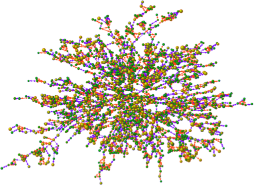
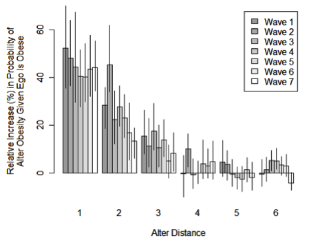
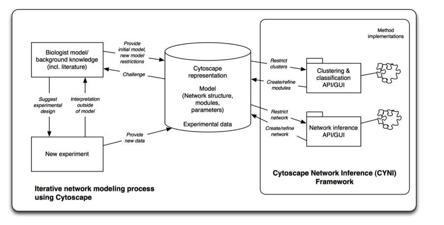

We are conducting an aggressive development program centered on Technology and Research Development projects (TRDs) that will extend the Cytoscape infrastructure to make it significantly more useful to researchers.
In this project, we will develop technology to automatically identify altered disease networks and enable the discovery of network-based biomarkers in cancer. Recentiy, we and others have shown proof of principle that networks and pathways provide a powerful tool to understand the pronounced genetic heterogeneity seen in individual tumors of the same cancer type and that they can lead to more accurate and robust signatures for classifying disease states. To date, such methods have been explored in glioblastoma multiforme as well as pancreatic, lung, breast and colorectal cancers . The algorithmic research and Cytoscape development in this TRD will be tied to analyzing multiple cancer types derived from The Cancer Genome Afias Project, prostate cancer genome data derived from the MSKCC Prostate Cancer Genome Project (PCGP, a collaborator), and Chronic Lymphocytic Leukemia. An additional user of the tools developed here will be a collaboration studying prostate cancer using a genomics approach.
We seek to address the following open issues to network-based biomarker identification:
Social networks are increasingly recognized as having an important effect on a wide variety of human behaviors, affecting the spread of health outcomes (AIDS, obesity, drinking and smoking behavior), emotional states (depression, loneliness, and happiness), and political outcomes (legislative activity, judicial decisions, and terrorist events). However, the statistical tools used to study these effects are drawn from a tradition that focuses on dyads, or sets of two people who are socially connected. When we find an association in behavior within dyads, we typically cannot distinguish three possible explanations. 1) Homophily: people might choose to be friends with others because they have the same behavior. In other words, birds of a feather might flock together. 2) Context: there might be variation in the environment than causes both individuals in a dyad to exhibit the same behavior. For example, poor neighborhoods might create environments that promote less healthy behaviors, causing an association between friends who live in the same neighborhood. 3) Influence: one person in the dyad actually influences the other in some way to cause their behavior to become more like their own.
In this project, we will develop algorithms for analyzing trend motifs in networks. Trend motifs are small patterns in a network that change over time. These will be used to study the spread of behaviors across social networks, primarily supporting research in DBP 3 (Role of social networks in the spread of disease). However, trend motifs are expected to be widely useful and will also be applied to cancer time series progression data from DBPs 1 and 2. The work will also provide a framework for a collaboration to work towards understanding the genetic basis of social networks. The algorithms will be developed and made freely available as Cytoscape plugins.
The understanding of collective behavior in social networks is of great importance for a wide range of topics, spanning the development of disease intervention strategies to the identification of terrorist threats. Therefore, the primary aim of this proposal is to develop a technology that distinguishes between homophily, context, and influence effects in dynamic social networks, and apply this analysis tool to the examination of health network databases such as the Framingham Heart Study and the National Longitudinal Study of Adolescent Health. This technology will be developed using the Cytoscape software infrastructure as Cytoscape plugin. In order to understand why so many behaviors are influenced by social connections, a tool must be developed that is able to detemiine the variable contribution of a given set of potential causes (such as homophily, context, and influence effects). This technology can then be used to determine the underlying causes behind the spread of various behaviors (health, political, emotional) in networks of different types and across different time points. The emerging techniques and tools will be broadly applicable to the study of social network influence on health behaviors such as eating habits, alcohol consumption, and drug use.
We will also use the technology to explore the effect of network structure on these behaviors. Given the evidence for clustering of obesity, we expect local structures to have important impacts on an individual's exposure to health behaviors and outcomes that go beyond dyadic transmission. We will also study the effect of structure on smoking and drinking behaviors, political behaviors, and the emotional contagion of happiness, depression, and loneliness.
Biologists frequently use networks to represent the structure and function of the cell, using intuitive metaphors to reduce multiple levels of spatial and temporal relationships to a two-dimensional image. At the same time, computational representations of the cell are more abstract and tend to be less intuitive for biologists than human-made diagrams. This section describes planned improvements to the biological relevance of computational visualizations of biological networks in Cytoscape. Intuitive biological network visualizations may one day replace printed biology textbooks as the primary resource for knowledge about cellular processes.
Imagine being able to view the entire network of genes and gene products working in a cell. Then freeze the cell at a moment in time, and zoom to visualize the location, state, and interconnections of a collection of molecules in a particular subcellular location. Zoom in further to identify the splice isoforms and variants resulting from that particular genome being processed in that tissue, at that time, under specific conditions. We are a long way from such an ideal cellular exploration system. Instead, biological systems are typically visualized as "ball and stick" networks that include only pairwise connections between nodes. This representation has many limitations, such as the inability to convey detailed knowledge about biological processes and their dynamics (e.g. biochemical reactions which are three-way relationships between metabolic substrates, products, and enzymes) and poor visualization of very large numbers of nodes and links as are present in the cell (e.g. resulting in visual "hairballs").
To overcome these challenges, we will develop new methods for visualizing and exploring very large biological networks that reduce visual complexity and enhance cognitive value compared to the traditional network display. These approaches will exploit the hierarchical and modular organization of biological networks and the large amount of information available about nodes and edges, such as Gene Ontology annotations of gene function. We will develop visualization methods in the following areas driven by DBP 4 and DBP 5:
To develop visualizations that are effective for exploring biological networks, we will take advantage of recent developments in Graphics Processing Unit (GPU) power and technology developed in the field of Information Visualization (InfoVis), such as the InfoVis Toolkit. We will also work with InfoVis and Human Computer Interaction researchers to ensure that our novel network visualization methods will ease network< navigation compared to current best methods.
Researchers need tools to not only aid in the collection and processing of large-scale datasets, but also to make sense of the data in the familiar context of biological pathways. The visualization methods that we will develop will enable a view of the cell that is intuitive to biologists and that leads them quickly to new discoveries - where a researcher exclaims "Aha! Now I understand the relationships in my data and can formulate a new hypothesis!" as a result of exploring a network in Cytoscape.

We propose to create an extension to the Cytoscape network visualization and analysis platform that will significantly facilitate the implementation of state-of-the-art clustering/classification and network inference algorithms for biology and other domains. Based on numerous available data sets (e.g. gene expression), these methods will propose connections between components in specific biological systems under study. This will be driven by and directly applicable to DBP 6 (Discovering agents that boost innate antimicrobial defenses). This research will also be used by the BaSysBio Project, which seeks to better understand dynamic gene regulation in bacteria.
Our broad objective is to make network induction more accessible to biologists by providing a user-friendly solution that lends itself to iterative application between computational network inference and experimentation. Specifically:
We plan to study the usability of the new approach in an iterative context with our biological collaborators.
